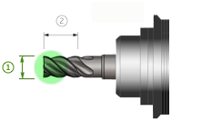

|
Specifica un diametro dello strumento di taglio più piccolo considerato per un'operazione di fresatura. |
|
||||
|
 |
Le dimensioni delle lavorazioni di risultato, come tasche, asole e raccordi, dipendono dal diametro minimo dello strumento. Mentre molti strumenti possono essere usati nel processo di produzione, inserire il diametro dell'utensile più piccolo che si vuole usare.